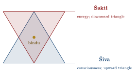
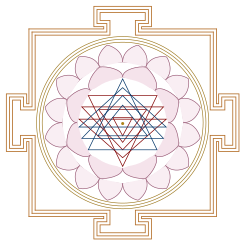

Chapter 5: Tantra and Yoga¶
A traditional definition of “Tantra” (attributed to the Kāmika Āgama)
tanoti vipulān arthān tattva-mantra-samanvitān
trāṇaṃ ca kurute yasmāt tantram ity abhidhīyate
That which expands vast knowledge pertaining to tattva (reality) and mantra (sacred formula), and which provides protection (trāṇa) — that is called Tantra.
5.1 What is Tantra?¶
Tantra is one of the most misunderstood yet important traditions of Indian religion. The word tantra comes from the root tan (to stretch, to weave) with the instrumental suffix -tra; its basic meaning is “loom” or “warp”, and hence a systematic treatise. In religious usage it denotes a body of scriptures, revealed (according to their adherents) by Śiva, the Goddess, Viṣṇu or the Buddha, and the traditions of ritual and yoga based upon them. Tantric traditions are Hindu (Śaiva, Śākta, Vaiṣṇava), Buddhist (Vajrayāna) and to a lesser extent Jain (Sanderson 1988; Samuel 2008). This chapter concentrates on Tantra as a form of yoga; the scriptures, ritual, schools and philosophy of the Tantric traditions are treated in full in Volume 6, Tantra–Āgama. It comes before the chapters on the subtle body and on Haṭha Yoga because the vocabulary of both — channels, centres, seed-syllables, the ascent of a power through the body — was first worked out in the Tantras (Section 5.7).
Definition: Tantra
Tantra is a comprehensive spiritual system that views the entire creation as a manifestation of divine energy (Śakti), and employs systematic methods — including mantra, yantra, mudrā, nyāsa, pūjā, and meditation — to realise the ultimate identity of the individual self with the Supreme Reality (Śiva-Śakti).
Many (though not all) Tantric traditions affirm that the world is a manifestation of the divine and that liberation — and worldly powers (siddhi) — can be attained through the body and the senses rather than by fleeing from them. Several Tantras (for example the Buddhist Hevajra Tantra) state the principle that the very things by which the ignorant are bound become, in skilful hands, the means of liberation.
5.2 Historical Development of Tantra¶
Scholars debate how far Tantra draws on older Vedic, ascetic and goddess cults; what is clear is that it emerged as a distinct, text-based movement around the 5th–6th century CE, the date of the earliest surviving Śaiva Tantra, the Niśvāsatattvasaṃhitā (Table 5.1) (Sanderson 2009).
| Period | Development |
|---|---|
| Background (before c. 500 CE) | Vedic ritual and mantra (Atharvaveda); Pāśupata and other Śaiva ascetic orders; goddess cults; Sāṃkhya cosmology |
| Early Tantric (c. 500–900 CE) | Earliest Śaiva Tantras (Niśvāsatattvasaṃhitā); Pāñcarātra Saṃhitās; Buddhist Tantras (Mahāvairocana); Kaula and goddess-centred (Kulā) traditions |
| Mature Tantric (c. 900–1300 CE) | Kashmiri non-dual Śaivism: Vasugupta (c. 850), Somānanda, Utpaladeva, Abhinavagupta (c. 950–1016); Śrīvidyā texts (c. 10th–11th c.); Śaiva Siddhānta in South India; Buddhist Yoginī Tantras |
| Late Tantric (c. 1300–1800 CE) | Integration with Haṭha Yoga; Bengali Śākta traditions; Ṣaṭcakranirūpaṇa (1577); Mahānirvāṇa Tantra (late 18th c.) |
| Modern (19th c. onwards) | Rāmakṛṣṇa’s Tantric training; Sir John Woodroffe’s translations; Western “neo-Tantra” |
5.3 The Philosophical Framework of Tantra¶
5.3.1 Śiva and Śakti: The Divine Dyad¶
At the heart of Tantric philosophy lies the doctrine of Śiva-Śakti — the inseparable unity of consciousness (Śiva) and energy (Śakti). Śiva is the static, transcendent principle of pure awareness; Śakti is the dynamic, immanent principle of creative power. They are not two separate realities but two aspects of one Supreme Reality, like fire and its heat, the sun and its light, a word and its meaning (Figure 5.1).
Saundaryalaharī 1
śivaḥ śaktyā yukto yadi bhavati śaktaḥ prabhavituṃ
na ced evaṃ devo na khalu kuśalaḥ spanditum api
Only if united with Śakti can Śiva create. Without Her, He cannot even stir.

5.3.2 The 36 Tattvas of Śaiva Tantra¶
While the Sāṃkhya system enumerates 25 tattvas (principles of existence), the Śaiva Tantric tradition expands this to 36 tattvas, adding eleven above the Sāṃkhya schema: five “pure” tattvas, Māyā, and the five “sheaths” (kañcukas) — limited agency (kalā), limited knowledge (vidyā), attachment (rāga), time (kāla) and causal restriction (niyati) — which explain how infinite consciousness appears as a finite, embodied individual (Table 5.2).
| Category | Tattvas | Description |
|---|---|---|
| Śuddha (Pure) | 1–5 | Śiva, Śakti, Sadāśiva, Īśvara, Śuddha Vidyā |
| Māyā and the sheaths | 6–11 | Māyā and the five Kañcukas (limiting powers) |
| Aśuddha (Impure) | 12–36 | The 25 Sāṃkhya tattvas, from Puruṣa and Prakṛti down to the five gross elements |
5.4 Tantric Methods and Practices¶
Tantra employs a wide range of practices. The most common — shared by almost all Tantric traditions — are mantra, yantra or maṇḍala, nyāsa, worship, initiation and meditation; the controversial “five Ms” of some Śākta lineages are discussed separately below.
5.4.1 Mantra¶
Mantra is the foundation of all Tantric practice. Every deity, every yantra, every ritual is activated by its specific mantra. The Tantric understanding of mantra goes beyond mere repetition — the mantra is viewed as the sound body of the deity, identical with the deity itself.
5.4.2 Yantra¶
A yantra is a geometric diagram that represents the energy pattern of a deity or cosmic principle. It is the visual counterpart of a mantra. The best-known yantra is the Śrī Yantra (also called Śrī Cakra), which represents the goddess Lalitā Tripurasundarī and the entire process of cosmic creation and dissolution (Figure 5.2).

5.4.3 Nyāsa¶
Nyāsa (literally “placing”) is the ritual practice of placing mantras on different parts of the body through touch and visualisation. It transforms the physical body into a sacred vessel, identifying each limb and organ with a specific deity or cosmic principle.
5.4.4 Pūjā (Worship)¶
Tantric worship (pūjā) is an elaborate ritual in which the deity is invoked through mantras, honoured with offerings, and meditated upon. The worship may be external (bāhya pūjā) using physical implements, or internal (āntara pūjā) performed entirely within the practitioner’s consciousness.
5.4.5 Dīkṣā (Initiation)¶
Dīkṣā (initiation) is essential in the Tantric path. Without proper initiation from a qualified Guru (ācārya), Tantric practices are considered ineffective and potentially dangerous. The Guru transmits the mantra, awakens the disciple’s inner Śakti, and provides the necessary guidance for the spiritual journey.
5.5 Śrī Vidyā: The Supreme Knowledge¶
Śrī Vidyā (“the auspicious knowledge”) centres on the worship of the Goddess as Lalitā Tripurasundarī (“the beautiful one of the three cities”) through the Śrī Yantra and the fifteen-syllabled mantra (pañcadaśī), which is divided into three sections (kūṭa); its inner worship identifies the circuits of the yantra with the worshipper’s own body (Volume 6). Śrīvidyā emerged as a distinct tradition around the 10th–11th centuries, with texts such as the Vāmakeśvarīmata and Yoginīhṛdaya, and later became closely associated with the Śaṅkarācārya monasteries of South India, where it was reshaped in a more orthodox, “right-hand” form. Tradition credits Śaṅkara with the Saundaryalaharī, a hymn of 100 verses praising the Goddess through Śrīvidyā symbolism, but most scholars regard the hymn as considerably later than Śaṅkara (Brooks 1992).
5.6 Kashmiri Śaivism: The Crown of Tantric Philosophy¶
Kashmiri Śaivism (an umbrella term for the Trika, Krama, Spanda and Pratyabhijñā traditions) is the most philosophically developed form of Tantric thought. It was worked out in Kashmir between the 9th and 11th centuries by Vasugupta (c. 850), Somānanda (early 10th century), Utpaladeva (10th century) and above all Abhinavagupta (c. 950–1016) and his pupil Kṣemarāja, and it presents a non-dual (advaita) vision of reality in which everything is a manifestation of Śiva-consciousness, endowed with absolute freedom (svātantrya) and with reflexive self-awareness (vimarśa). Three of its ideas matter for yoga. Liberation is a “recognition” (pratyabhijñā) that one’s own self is Śiva, not a state produced by technique. Consciousness is not static but vibrates (spanda), so that moments of intense feeling or of transition can open onto it — the basis of the Vijñāna Bhairava’s methods described below. And awakening can be given by grace, in the “descent of power” (śaktipāta) at initiation, which later teachers equated with the awakening of kuṇḍalinī (Chapter 6). Its philosophy is treated in Volume 6.
5.7 Yoga in the Śaiva Scriptures¶
Much of what later became Haṭha Yoga’s vocabulary — the channels and centres of the subtle body, the fixations on the elements, the seed-syllables, the ascent of a power through the body — was first worked out in the Śaiva Tantras of the second half of the first millennium (Chapters 6 and 7). The structure of these scriptures, with yoga as one of their four “feet” alongside doctrine, ritual and conduct, is described in Volume 6, Tantra–Āgama; this section looks at the yoga itself.
Six limbs, not eight. The yoga of the Śaiva scriptures is usually “six-limbed” (ṣaḍaṅga): breath-control, withdrawal of the senses, meditation, fixation, reasoning (tarka) and absorption, though the order varies between texts. The same six, without Patañjali’s ethical limbs and without āsana as a limb, are already listed in the Maitrāyaṇīya Upaniṣad (6.18), and a six-limbed yoga, with partly different limbs, was also taught in the Buddhist Kālacakra tradition (Chapter 9, Section 9.10). The distinctive limb is tarka, which in this context is not logical argument but a discerning judgement of what is to be rejected and what is to be sought; Abhinavagupta, who held that yoga is subordinate to gnosis (jñāna), singled it out in the fourth chapter of his Tantrāloka as the highest of the limbs, because it bears directly on understanding (Vasudeva 2004).
Fixations on the elements. The most characteristic Tantric technique is a series of dhāraṇās in which the yogin fixes the mind, and often the breath, in regions of the body correlated with the five elements, each visualised with its own shape, colour, seed-syllable and presiding deity. Mastery of each fixation is said to give power over its element: the yogin who masters earth cannot be harmed by it, and so on. Such fixations are taught in the earliest surviving Śaiva Tantra, the Niśvāsatattvasaṃhitā (its oldest parts 5th–6th century), in its book on yoga, the Nayasūtra (Goodall 2015). Birch has pointed out that most Haṭha texts understand dhāraṇā in this Tantric sense, as holding the breath in the body’s elemental regions, rather than in Patañjali’s sense of binding the mind to a place; the five dhāraṇā mudrās of the Gheraṇḍasaṃhitā are a late form of the same practice (Birch 2011).
The conquest of the levels of reality. In the Mālinīvijayottaratantra, the root scripture of the Trika on which Abhinavagupta based his Tantrāloka, yoga is a graded ascent through the thirty-six tattvas (Table 5.2). The yogin conquers the elements one by one, then the senses and the mental faculties, experiencing each level of reality from within until he reaches Śiva. Somadeva Vasudeva, who edited the text’s chapters on yoga, has shown that the Mālinīvijayottara does not teach one system but integrates several competing yogas — of the six limbs, of the conquest of the realities, of meditations on the “targets” (lakṣya) of attention — into a single hierarchy (Vasudeva 2004).
Powers and liberation. The Śaiva Tantras distinguished two kinds of initiate: one who seeks liberation and one, the sādhaka, who seeks supernatural powers and enjoyments in this life and in higher worlds. Yoga served both, and the scriptures describe powers — flight, invisibility, entering other bodies — as frankly as the Mahābhārata did (Chapter 1, Section 1.5). For the dualist Śaiva Siddhānta, liberation came through initiation, which removes the bonds of the soul, rather than through yoga, which therefore remained an auxiliary. In the non-dualist Trika the emphasis moved from technique to recognition: the highest of Abhinavagupta’s ways, the “way of Śiva” (śāmbhavopāya), works through a sudden intuition rather than through technique, and yoga with its limbs belongs to the lowest of his ways, the “individual” way (āṇavopāya) (Sanderson 1988, 2009).
Vaiṣṇava Tantra. The Pāñcarātra saṃhitās contain comparable chapters on yoga, combining Patañjali’s limbs with breath-control in the nāḍīs and with meditation on the forms of Viṣṇu (Volume 6). Together with the Purāṇic teachings described in Chapter 1 (Section 1.5.3), they explain why the earliest text to teach a yoga it calls Haṭha, the Dattātreyayogaśāstra, could be a Vaiṣṇava work.
Three points follow for the history of Yoga. First, the six-limbed scheme was at least as widespread in the first millennium as Patañjali’s eight, and the early Haṭha texts sometimes follow it: the Vivekamārtaṇḍa teaches six limbs (Chapter 7, Section 7.3.2). Secondly, the Tantric yoga of the scriptures was embedded in initiation, ritual and mantra; when the Haṭha texts presented their techniques as open to anyone without initiation, they were breaking with that setting. Thirdly, the modern picture of a single “Tantric yoga” of seven cakras and kuṇḍalinī, examined in the next chapter, is a late simplification of a literature that taught many different systems.
5.8 Tamil Śaiva Yoga: Tirumūlar’s Tirumantiram¶
The Śaiva yoga of the Sanskrit Tantras has a Tamil counterpart that is still recited in temples. The Tirumantiram (“Sacred Mantra”) of Tirumūlar, a work of about three thousand quatrains arranged in nine sections called tantirams, forms the tenth book of the Tamil Śaiva canon, the Tirumuṟai. Its date is disputed. Hagiography makes Tirumūlar a yogin from the north who entered the body of a dead cowherd, Mūlaṉ, and remained in the Tamil country for three thousand years, composing one verse a year; modern scholars have placed the work anywhere between the sixth and the twelfth centuries, and it may contain layers of different dates (Zvelebil 1973; Ganapathy 1993).
Its third section teaches an eight-limbed yoga whose limbs bear Patañjali’s names but whose content is Tantric: breath-control in the channels, the fixation of the mind in centres of the body, the rousing of an inner fire, the drinking of the nectar that flows from the head, and the eight great powers that follow from mastery. One verse defends the body as the instrument of liberation: if the body perishes, the poet says, the life within it perishes too, and true knowledge is never reached; so, having learnt the means of fostering the body, he fostered the body and with it the life. The concern with a perfected, long-lived body anticipates the Haṭha texts by centuries (Chapter 7). Other sections expound the Śaiva Siddhānta categories of the Lord, the soul and its bonds (pati, paśu, pāśa), ritual, mantra and right conduct, and the work is the source of the line, often quoted as a summary of Tamil Śaivism, that only the ignorant say love and Śiva are two.
Later lists count Tirumūlar among the eighteen Siddhas (Cittar) of Tamil tradition, whose poetry of yoga, alchemy and protest is discussed with the vernacular yoga literature in Chapter 7 (Section 7.16). The Tirumantiram thus stands where three histories meet: the Sanskrit Śaiva Tantras, the Tamil devotional canon, and the Siddha tradition of medicine and immortality treated in Volume 13, Āyurveda.
5.9 The Tantric Textual Tradition¶
The Tantric corpus is vast: the Śaiva Āgamas and Bhairava Tantras, the Śākta Tantras (among them the Kulārṇava), the Vaiṣṇava Pāñcarātra Saṃhitās, the works of the Kashmiri Śaiva exegetes and the Buddhist Tantras. Its classification and contents are surveyed in Volume 6, Tantra–Āgama. Two works matter especially for the history of Tantric yoga.
5.9.1 The Tantrāloka of Abhinavagupta¶
The Tantrāloka (“Light on the Tantras”), composed by Abhinavagupta around the beginning of the eleventh century, is the most comprehensive work of the non-dual Śaiva tradition. In 37 chapters and some 5,800 verses it sets out theology, ritual and yoga on the basis of the Mālinīvijayottara, and its hierarchy of “ways” (upāya), described above, places the yoga of breath and fixation at the lowest level and sudden recognition at the highest.
5.9.2 The Vijñāna Bhairava Tantra — 112 Meditation Techniques¶
The Vijñāna Bhairava Tantra (probably 7th–9th century, from the Trika milieu of Kashmir) is among the most accessible and practically oriented Tantric texts. Cast as a dialogue between Bhairava and the Goddess, it presents 112 dhāraṇās (concentration techniques), each offering a distinct doorway into the experience of non-dual consciousness (Singh 1979) (Table 5.3).
| Technique | Method |
|---|---|
| Breath awareness | Focus on the points where the in-breath and out-breath arise and turn; in that gap, consciousness reveals itself |
| Moments of intensity | At the beginning or end of a sneeze, in fear, grief or surprise, the mind is momentarily emptied — abide in that state |
| Desire contemplation | When desire arises, fix attention on it; freed from its object, its energy reveals itself as Śakti |
| Sky meditation | Gaze at the clear sky without thought; the mind dissolves into boundless space |
| Music absorption | While enjoying song and music, become absorbed in it so completely that the mind is one with it |
Scholarly Note: The Vijñāna Bhairava and Modern Meditation
The Vijñāna Bhairava Tantra has become popular in modern meditation circles, partly through Paul Reps’s Zen Flesh, Zen Bones (which included a free rendering of it) and through Osho (Rajneesh), whose lectures on its 112 techniques were published as The Book of Secrets. Its emphasis on finding meditative awareness in ordinary moments — eating, listening to music, even sneezing — resonates with modern interest in “everyday” meditation, although the text’s own setting is Tantric Śaiva theology and initiation.
5.10 Transgression, the “Five Ms” and Their Reinterpretation¶
Popular presentations of Tantra tend either to reduce it to sexuality or, in reaction, to deny that sex and transgression had any place in it. Neither is accurate. Most Tantric ritual was concerned with initiation, mantra, worship and meditation, and the mainstream Śaiva Siddhānta was ritually conservative. But a significant strand — the Kaula and related “left-hand” (vāmācāra) traditions — deliberately used substances and acts that orthodox Brahmanism held to be impure, in order to transcend the distinction between pure and impure and to gain power and liberation (Sanderson 1988; White 2003).
The best-known expression of this is the pañca-makāra or “five Ms” (also called the pañca-tattva), named after the initial letter of each element (Table 5.4).
| Element | Literal meaning | Notes |
|---|---|---|
| Madya | Wine | Alcohol, forbidden to brahmins in orthodox law |
| Māṃsa | Meat | Including meats held to be especially impure |
| Matsya | Fish | |
| Mudrā | Parched grain | Interpreted in some texts as a hand gesture, and in some modern accounts as the female ritual partner |
| Maithuna | Sexual union | Ritual intercourse, in some lineages with a partner of low caste, to overcome notions of purity |
These elements were used literally in Kaula rites; Abhinavagupta’s Tantrāloka (ch. 29) describes the Kula ritual, including its sexual component, and texts such as the Kulārṇava Tantra prescribe the five elements while warning that they are only for the properly initiated. Over time three responses developed. “Right-hand” (dakṣiṇācāra) practitioners used substitutes (pratinidhi) — milk or coconut water for wine, vegetables or pulses for meat and fish, and the worship of a deity with flowers in place of sexual union. Others internalised the elements as yogic processes: “wine” as the nectar flowing from the head in khecarī mudrā, “meat” as the tongue, “union” as the meeting of kuṇḍalinī with Śiva. And in the colonial period, defenders such as Woodroffe stressed the symbolic readings in response to missionary and Orientalist attacks on Tantra as immoral (Urban 2003).
All three — literal, substitute and internalised — are part of the history. Describing the five Ms only as “symbolic” sanitises that history; describing Tantra only through them distorts it. The ultimate aim professed by all Tantric schools is liberation and the realisation of one’s identity with the divine, alongside the pursuit of worldly powers that many Tantras openly promised.